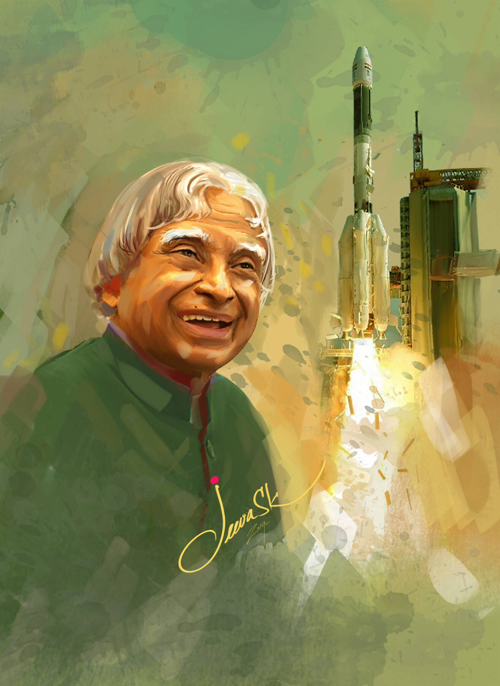

APJ Abdul Kalam
- Born: October 15, 1931
- Profession: Aerospace scientist and politician who served as the 11th President of India from 2002 to 2007.
- Nationality: India
Biography of Dr.A.PJ. Abdul Kalam
A.P.J. Abdul Kalam, in full Avul Pakir Jainulabdeen Abdul Kalam, (born October 15, 1931, Rameswaram, India—died July 27, 2015, Shillong), Indian scientist and politician who played a leading role in the development of India’s missile and nuclear weapons programs. He was president of India from 2002 to 2007.Kalam earned a degree in aeronautical engineering from the Madras Institute of Technology and in 1958 joined the Defence Research and Development Organisation (DRDO). He soon moved to the Indian Space Research Organisation, where he was project director of the SLV-III, India’s first indigenously designed and produced satellite launch vehicle. Rejoining DRDO in 1982, Kalam planned the program that produced a number of successful missiles, which helped earned him the nickname “Missile Man.”In 2002 India’s ruling National Democratic Alliance (NDA) put forward Kalam to succeed outgoing President Kocheril Raman Narayanan. Kalam was nominated by the Hindu nationalist (Hindutva) NDA even though he was Muslim, and his stature and popular appeal were such that even the main opposition party, the Indian National Congress, also proposed his candidacy. Kalam easily won the election and was sworn in as India’s 11th president, a largely ceremonial post, in July 2002. He remained committed to using science and technology to transform India into a developed country. In 2007 Kalam left office and was succeeded by Pratibha Patil, the country’s first woman president.Kalam wrote several books, including an autobiography, Wings of Fire (1999). Among his numerous awards were two of the country’s highest honours, the Padma Vibhushan (1990) and the Bharat Ratna (1997).
Influence
Dr.Kalam taught me how to stay simple,humble,honest,dedicated,strive for excellence and selfless love.He has inspired lots of children and the youth of our country to strive for excellence and use your education towards progress and development of our country.He was never after material possessions.He took with him what was his prized possession and what he valued the most: it was knowledge. No doubt in today’s evil world of politics, there existed a leader like him.That is why he is fondly called as”people’s president”. He earns respect even after his death.His life was very successful and I see him as my role model.
Three things about Kalam sir which fascinate me towards him are:
- He was a great dreamer . I also love to dream . His words dream transform into thought and thoughts create action inspire me a lot.
- Despite the fact that he became President of India, he used to be very down to earth always smiling and an inspiring person even to the opponents.
- He belonged to a very poor family with hardly any educational background, but still could achieve the excellence in a field he was interested through his hard work and determination.